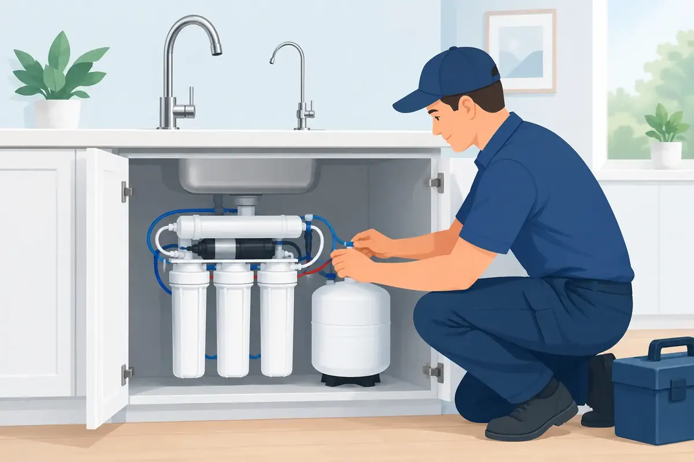

A reverse osmosis installation can turn the water at one kitchen tap into a dependable source for drinking, cooking, coffee, baby bottles, and pet bowls. But this is not a one-size-fits-all upgrade. The right system must fit your water conditions, available space, plumbing layout, and household expectations for water pressure and filter maintenance.
For many Middle Tennessee homeowners, an under-sink reverse osmosis system is a practical answer to concerns about taste, odor, dissolved minerals, or specific contaminants identified through water testing. A qualified plumber can help make sure the system is installed cleanly, drains correctly, and delivers the performance your family expects.
What a Reverse Osmosis System Actually Does
Reverse osmosis, often called RO, uses water pressure to push water through a very fine membrane. Along with pre-filters and post-filters, that membrane reduces many dissolved substances that ordinary sediment or carbon filters may not address. The treated water is stored in a small tank and delivered through a separate faucet at the sink, or sometimes routed to a refrigerator ice maker.
An RO system is usually a point-of-use system. In other words, it treats water for drinking and food preparation rather than supplying filtered water to every shower, toilet, and appliance in the home. That distinction matters. If hard water is leaving scale on fixtures, affecting the water heater, or making laundry difficult, a water softener or whole-house filtration approach may be the better starting point.
The best choice depends on the problem you are trying to solve. Water that tastes unpleasant may need a different solution than water that contains elevated minerals, sediment, chlorine, or a contaminant found in a test. A plumber should not simply recommend equipment from a shelf without considering the water entering your home.
Before Reverse Osmosis Installation Begins
A proper installation starts with a look at the cabinet below the sink. The system needs room for filter housings, tubing, a storage tank, and enough clearance to change filters later. Crowded cabinets, pullout trash bins, garbage disposals, and existing leak damage can all affect the layout.
Your plumber will also inspect the cold-water supply valve, drain connection, water pressure, and sink countertop. Most systems require a dedicated filtered-water faucet. That may mean using an open accessory hole in the sink, replacing an existing soap dispenser, or carefully drilling a new opening in an approved countertop location.
Water pressure is especially important. RO systems need sufficient pressure to move water through the membrane. Low pressure can slow production, reduce output, and create frustration when the storage tank takes too long to refill. In some homes, a booster pump may be appropriate. In others, the cause may be a supply issue that should be corrected before filtration equipment is installed.
If your home has a private well, water testing is even more valuable. Well water may carry sediment, iron, sulfur odor, hardness, or other conditions that can shorten membrane life. An RO unit can be part of the answer, but it may need pretreatment to prevent frequent filter changes and poor performance.
How Professional Reverse Osmosis Installation Works
The work begins by shutting off the cold-water supply and protecting the cabinet area. The plumber installs an approved feed connection to bring cold water into the filtration system. This connection needs to be secure and accessible, because it will be used whenever the system needs service.
Next, the filtration assembly and storage tank are positioned where they can be reached without straining tubing or blocking cabinet doors. Tubing is routed neatly between the water supply, filter stages, tank, faucet, and drain connection. A careful layout is more than appearance. Kinked tubing, loose fittings, or poorly supported components can lead to leaks and unreliable flow.
The drain connection is a critical part of the job. An RO membrane separates purified water from the water carrying away concentrated dissolved material. That reject water must discharge properly through an approved drain connection. A professional installation helps prevent cross-connection concerns, drainage problems, and the makeshift fittings that can fail under a sink.
After connections are made, the plumber checks for leaks, pressurizes the system, and flushes it according to the equipment manufacturer's directions. New filters and membranes often require an initial rinse before the water is ready for regular use. The storage tank may need several hours to fill completely, so the first day of operation can feel slower than normal.
Before leaving, a good technician should show you how to use the shutoff valve, recognize normal system sounds, and identify the filters that will eventually need replacement. That small amount of instruction helps you protect the investment long after installation day.
The Trade-Offs Homeowners Should Understand
RO water is not produced instantly at the faucet. The system filters water gradually and stores it in a pressurized tank, so flow may be slower than your regular kitchen faucet. A larger household, frequent cooking, or a refrigerator connection may call for a larger tank or a higher-capacity system.
Reverse osmosis also produces some wastewater as part of the filtration process. The amount varies by model, incoming pressure, and system design. Modern high-efficiency units can reduce waste compared with older designs, but no RO system should be chosen under the assumption that every gallon entering becomes drinking water.
Because RO removes many dissolved minerals, some people prefer systems that add minerals back after filtration for taste. Others are satisfied with the clean, neutral flavor of standard RO water. Neither preference is wrong. It is a matter of household taste, system design, and the results you want from your drinking water.
Maintenance is another real consideration. Sediment and carbon pre-filters commonly need replacement on a regular schedule, while the membrane typically lasts longer but does not last forever. Waiting until the water tastes bad is not a dependable maintenance plan. A clogged pre-filter can reduce performance before the water shows an obvious change.
When an RO System Needs More Than Routine Service
A slow trickle, unusual taste, low tank pressure, or water beneath the cabinet deserves attention. Sometimes the fix is a scheduled filter replacement. Other times, the issue may involve a worn tank bladder, a clogged membrane, a loose tube connection, low incoming pressure, or a drain saddle that needs correction.
Do not ignore a small under-sink leak because the cabinet is out of sight. Moisture can damage flooring, cabinetry, and stored household items before it becomes visible elsewhere. If a filter housing or fitting is leaking, shut off the system's water supply if you can and arrange professional service.
Homeowners should also be cautious about connecting a system to a refrigerator without confirming capacity and layout. A long tubing run or undersized tank can leave you with slow ice production and an empty drinking-water tank when the family needs it most.
Choosing a Plumber for Your RO System
The right installer should ask questions before recommending a setup. What concerns do you have about the water? Is the home on city water or a well? Do you already have a softener or whole-house filter? Will the system serve only a drinking faucet, or will it also supply an ice maker?
You should also receive clear information about what is included: equipment location, faucet installation, drain connection, startup, filter service, and workmanship coverage. Upfront answers are especially valuable because under-sink plumbing is compact, and every home presents a slightly different installation challenge.
At Angle Stop Plumbing, our goal is to treat every customer like family while providing the careful workmanship your home deserves. That means courteous professionals, clear communication, and a family-friendly No Foul Language Guarantee while work is being completed in your home.
Clean drinking water should bring peace of mind, not a cabinet full of confusing parts or concerns about leaks. A properly selected, professionally installed RO system gives your household a simple daily benefit: water you can feel good about pouring for the people you love.